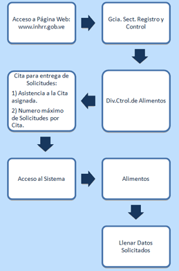

División Control de Alimentos
Descripción del Proceso de Entrega de una Solicitud de Ensayo para Fines de Registro Sanitario de Alimentos
- Para cada Producto Alimenticio a Registrar, debe llenar el formulario F-DARM-001 Solicitud de Ensayo al Laboratorio para Fines de Registro Sanitario de Alimentos.
- Debe traer el Formulario Original con timbre fiscal equivalente a un valor de 0,02 UT y firmado por el solicitante/tramitante, además de copias correspondientes al número de laboratorios que requiera y una adicional para ser sellada y firmada por la Unidad de Recepción de Muestras de Alimentos, como constancia de su consignación.
- El Nº de laboratorios que se debe cancelar depende del tipo de ensayo aplicable al Producto Alimenticio. Ver Cantidades mínimas.
- Realizar el depósito bancario con la tarifa correspondiente a registro en la cuenta corriente del Instituto Nacional de Higiene "Rafael Rangel", Nº 0102-0132-28000869-9691, Banco de Venezuela. El monto a cancelar dependerá del tipo de trámite a realizar, según la Gaceta Oficial de la República Bolivariana de Venezuela N° 36.517 del 14/08/1998. No se aceptaran depósitos con un monto mayor o menor al indicado. Ver TARIFAS.
- Debe asegurarse de tener completos:
- Una vez que se tengan listos los recaudos y muestras, solicitar una Cita para Entrega de Solicitudes, según se indica en la página web:

- El día de la Cita el solicitante debe llegar al menos 10 minutos antes de la hora asignada, para ser atendido en la Unidad de Recepción de Muestras de Alimentos, Planta Baja, Edificio Sede del INH"RR", Ciudad Universitaria, Caracas y deberá hacer entrega de:
- Formulario F-DARM-001 Solicitud de Ensayo al Laboratorio para Fines de Registro Sanitario de Alimentos.
- Los recaudos.
- Las muestras.
- La Constancia de la Solicitud de la Cita donde se indica la fecha de la misma.
- El personal de la Unidad de Recepción de Muestras de Alimentos, revisará la solicitud presentada a fin de constatar la presencia de todos los recaudos y muestras exigidas, aplicando formulario F-DARM-002 “Verificación de Recaudos”. No se aceptarán solicitudes que presenten recaudos faltantes o algún tipo de enmienda en el Formulario de Solicitud y/o documentos anexos. Una vez revisada, se asignará un número a cada solicitud y se sellará el formulario F-DARM-001 respectivo con la fecha de recepción. Ver Normas relativas a la Solicitud de Ensayo y Recaudos.
- El personal de la Unidad de Recepción de Muestras de Alimentos devolverá una copia del formulario F-DARM-001 (sin anexos), como constancia de recepción y admisión de su solicitud.
- El Informe de Ensayo para fines de Registro Sanitario será entregado en los siguientes lapsos:
- a. Sesenta (60) días hábiles para los productos de primera necesidad y de consumo masivo tales como: leche (en polvo, completa, pasteurizada, UHT), queso blanco, margarina, atún, sardina, charcutería popular, jugo, néctar, pasta, arroz, alimentos para niños, harina de maíz, café, sal, azúcar y aceite.
- b. Noventa (90) días hábiles para los demás Productos Alimenticios, incluyendo las bebidas alcohólicas y productos de nuevo desarrollo. Ver Normas relativas al Informe de Ensayo.
|
|
|
|